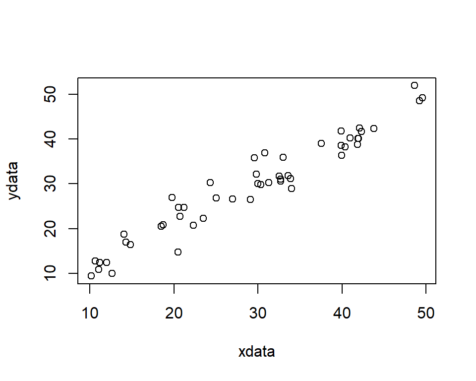

Chapter 3 Describing data
3.1 Introduction
The goal is to turn data into information and information into insight.
Carly Fiorina, former chief executive officer, Hewlett Packard
In chapter 2, different data collection methods were discussed. Having obtained some data, the first stage of any analysis is to perform an exploratory investigation to extract summaries of the data, such as the number of observations and average values and to plot it. In this chapter we consider methods to summarise data both visually and numerically. First, we consider types of data because the methods used for both simple, and more complex, analyses will depend on the type of data; for example, eye colour (e.g. blue, brown) cannot be described by a numerical average which could be used to describe a variable like height.
By the end of this unit you should be able to:
distinguish between the different types of data
calculate basic numerical summaries for data
know which plots are applicable to different types of data.
3.2 Types of data
There are two general categories of variables: quantitative and qualitative.
Quantitative data measure some quantity resulting in a numerical value, e.g. weight, salary.
Qualitative data measure the quality of something resulting in a value that does not have a numerical meaning, e.g. colour, religion, season.
These general types can be partitioned further:
Quantitative
Discrete: data with distinct values and the possible values take only a distinct series of numbers (e.g. number of traffic accidents, number of children born to a women)
Continuous: a value that can be measured evermore precisely and hence become essentially continuous (e.g. height, speed).
For convenience, continuous data is often truncated to discrete values: for example, height may be reported to the nearest centimetre, (e.g. I might say my height is 167 cm rather than 167.2345 cm); and age is generally reported in years rather than in years, months, days and hours etc.
Qualitative
Ordinal: non-numeric value but the values have some natural ordering; e.g. poor, fair, good, excellent.
Nominal: unordered, distinct by name only; e.g. green, red, white.
3.3 Frequency distributions
For discrete variables, with a limited number of distinct values, or qualitative variables, the frequency distribution is a useful summary. It is formed by counting the number or frequency of each distinct value.
Suppose that a variable (which we will call \(z\)) could take values from 1 to 10, inclusive. The following 20 values had been recorded, and sorted in value order, \(z=\){2,2,2,2,2,3,4,4,5,5,5,6,7,7,8,8,8,8,10,10}. The frequency distribution would be formed by counting the number of 1’s, 2’s, 3’s and so on. For this example, the frequency distribution of \(z\) is shown in Table 3.1.
| z | Frequency |
|---|---|
| 1 | 0 |
| 2 | 5 |
| 3 | 1 |
| 4 | 2 |
| 5 | 3 |
| 6 | 1 |
| 7 | 2 |
| 8 | 4 |
| 9 | 0 |
| 10 | 2 |
From this summary, it is straightforward to identify the mode, the most frequently recorded value. In this case, the mode is 2; the number 2 was recorded five times, which was more than any other value.
For continuous data, or discrete data with a large number of distinct values, the values are grouped into classes to form the frequency distribution. For example, if the heights of 100 adults had been measured to the nearest cm, then the frequency distribution may be created by counting the number of heights in the classes 151-155cm, 156-160cm, 161-165cm, and so on.
3.3.1 Doing this in R
There is a useful command in R which tabulates the number of records for each distinct value but note that it does not include possible values that were not recorded (e.g. in the sample set \(z\), 1 and 9 were not recorded).
# Create object containing values
z <- c(2,2,2,2,2,3,4,4,5,5,5,6,7,7,8,8,8,8,10,10)
# Get frequencies
table(z)z
2 3 4 5 6 7 8 10
5 1 2 3 1 2 4 2 3.4 Numerical summaries
The frequency distribution distills the data into a useful table which contains all the information about that recorded variable. However, we generally want to summarise the data with a numerical summary rather than a table and to summarise a variable fully, we want to calculate a measure of centre (or central tendency) and a measure of spread (or variability). Knowing something about both the centre and spread is far more informative than just one measure alone.
The mode, mentioned previously, can be considered as a measure of the centre. The other measures we consider are the mean and median.
The measures of spread we will consider are the range, interquartile range, variance and standard deviation.
For these quantities it is useful to distinguish between the population and a sample drawn from the population.
3.4.1 Population mean
The population mean is a parameter (usually denoted by \(\mu\)) which is typically unknown. To obtain the population mean we have to sample every object in the population to obtain the true parameter. It is given by
\[\mu=\frac{\sum_{i=1}^{N} x_i}{N}\] where
\(N\) is the population size
\(x_i\) is the \(i\)th value in the set of values denoted by \(x\) (e.g. \(x_1, x_2, \ldots ,x_N\))
3.4.2 Sample mean
Measuring every object in the population is often too difficult/expensive/impossible, therefore a sample is taken from the population and we obtain an estimate of \(\mu\) - this is called the sample mean. Remember, an estimate is a quantity calculated from our sample in order to estimate an unknown parameter.
The notation used to denote the sample mean varies; sometimes \(\hat{\mu}\) is used, where the ‘hat’ denotes it is an estimate. More frequently, it is denoted by a ‘bar’ over the name of the variable (e.g. \(\bar x\)).
For any given sample, the sample mean is given by
\[\bar x = \frac{\sum_{i=1}^{n} x_i}{n}\]
where
\(n\) is the sample size
\(x_i\) is the \(i\)th value in the set of values denoted by \(x\) (e.g. \(x_1, x_2, \ldots ,x_n\))
The sample mean for the sample set of values in \(z\) will be
\[ \bar z = \frac{2+2+2+2+2+3+4+4+5+5+5+6+7+7+8+8+8+8+10+10}{20} = \frac{108}{20}=5.4\]
3.4.3 Sample median
We find the sample median (sometimes denoted by \(\tilde{x}\)) for any given sample of data by:
sorting the values in value order and
finding the middle number.
The position of the sample median for an ordered set of values can be found using: \[\textrm{position}=\frac{n+1}{2}\]
where \(n\) is the sample size.
This formula means that when the sample size is an odd number the median can be directly obtained from the data set. For example, if \(n=11\), the median lies in the 6th position: \[\textrm{position} = \frac{11+1}2=6 \]
If \(n\) is an even number, the median lies between two values. If, for example, \(n=12\), then \(\textrm{position}=\frac{12+1}2=6.5\). Thus, the median will lie between the 6th and 7th values. For simplicity and ease of calculation, the average of the two values is often used.
In the sample set of data \(z\), there are 20 values, therefore, \[\textrm{position}=\frac{20+1}{2}=10.5\] and so the median will be the average of the 10th and 11th positions. Our sample is already sorted in order and the values in these positions are 5 and 5, thus, the median is \(\frac{5+5}2 = 5\).
3.4.4 Range
One of the simplest summary measures of variability is the range, the difference between the maximum and minimum value. In the sample set of numbers \(z\), the lowest is 2 and the highest is 10, and so the range is 10 - 2 = 8. The range is often referred to as the ‘minimum to maximum’ value (e.g. ‘the range is 2 to 10’) but statistically it is the difference of these numbers.
Although useful, the range can sometimes be misleading if there is one number very different to the rest. For example, in the set \((3, 7, 9, 12, 14, 18, 19, 20, 1115)\), the range is \(1115 - 3 = 1112\), however, eight of the numbers are between 3 and 20. Therefore, other measures of spread may be more useful.
As an aside, an outlier in a set of data is a value that is very different to the other values recorded, such as the value 1115 in the above set. This value may be due to natural variability or due to an error in recording for example, (e.g. it may really be two numbers 11 and 15). If outliers are identified, they should be double-checked in case of error. The mean is somewhat sensitive to outliers whereas the median is more robust to outliers.
3.4.5 Percentiles
The median is also known as the 50th percentile because 50% of values lie below it and 50% of values lie above it and while this value is commonly used as a measure of the centre, other percentile values are commonly used to describe the spread of the data. In particular,
25th percentile (also called the lower or 1st quartile) - the value at which 25% of the data lies below and 75% above, and
75th percentile (upper or 3rd quartile) - the value at which 75% of the data lies below and 25% above.
The interquartile range (IQR) is given by (75th percentile - 25th percentile), thus 50% of the data lies in this range.
In the sample set \(z\), we have 20 values, therefore the 25th percentile lies between the 5th and 6th position (5 values below and 15 values above), thus the average of the values in these positions is \(\frac{2+3}2 = 2.5\). The 75th percentile lies between the 14th and 15th position (15 values below and 5 values above), giving \(\frac{8+8}2= 8\). The IQR is thus \(8 - 2.5 = 5.5\).
As an aside, when the value of a percentile lies between two numbers, it is convenient, when doing calculations by hand, to calculate the mean of the two numbers. However, different algorithms can be used and in fact R uses such an algorithm by default, which may result in a slightly different answer compared to using the mean; we will see an example of this later.
3.4.6 Population variance
To obtain a measure of the variability in the population, we might, intuitively, calculate the difference between each value and the population mean and sum over all values:
\[ \sum_{i=1}^{N} (x_i - \mu) \] Using the sample set \(z\) as a population, we get
\[(2-5.4) + (2-5.4) + ... + (10-5.4) = -3.4 + (-3.4) + ...+ 4.6 = 0\] Hmm! This clearly doesn’t quantify the variability very well because the result is 0; this is because the mean is the centre of all the values in the set. Squaring the differences avoids this problem:
\[ \sum_{i=1}^{N} (x_i - \mu)^2 \] To obtain a measure of the average difference over all values, we divide by \(N\).
\[\sigma^2 = \frac{\sum_{i=1}^N{(x_i - \mu)^2}}{N} \] This is called the population variance and is usually denoted by \(\sigma^2\).
3.4.7 Sample variance and standard deviation
As with the mean, we are generally dealing with a sample and not the whole population. Therefore, the population mean, \(\mu\), is unknown and so the mean is estimated from a sample of size \(n\). Thus, the sample variance (denoted by \(s^2\)) is generally a more usual estimate to obtain:
\[s^2 = \frac{\sum_{i=1}^n{(x_i - \bar x)^2}}{n-1} \] Note the use of \((n-1)\) in the denominator instead of \(n\). The quantity \((n-1)\) is called the degrees of freedom of \(s^2\). It can be thought of as a correction for using a sample rather than the population.
Returning to our sample set of values \(z\), the sample variance will be given by:
\[s^2 = \frac{(2-5.4)^2 + (2-5.4)^2 + ... + (10-5.4)^2}{20-1}\] \[ = \frac{(-3.4)^2 + (-3.4)^2 + ...+ 4.6^2}{19} = \frac{142.8}{19} = 7.516\]
The units of variance are tricky because they are ‘units squared’; by taking the square root of the variance, the statistic is transformed back to the same scale as the original values. This is called the sample standard deviation, \(s\):
\[s = \sqrt{s^2} = \sqrt{\frac{\sum_{i=1}^n{(x_i - \bar x)^2}}{n-1}} \]
The standard deviation for the sample set is thus:
\[s = \sqrt{7.516} = 2.741\]
3.4.8 Numerical summaries in R
# Numerical summary commands
# As before, use the sample set of data, z
z <- c(2,2,2,2,2,3,4,4,5,5,5,6,7,7,8,8,8,8,10,10)
# Mean
mean(z)[1] 5.4# Median
median(z)[1] 5# Obtain min and max values for the range - NOTE it doesn't do the calculation
range(z)[1] 2 10# Obtain percentiles
# NOTE, a different algorithm is used to calculate the percentile if it lies
# between two numbers
quantile(z, probs=0.25) # 25th 25%
2.75 quantile(z, probs=0.75) # 75th75%
8 # Interquartile range
IQR(z)[1] 5.25# Sample variance
var(z)[1] 7.515789# Sample standard deviation
sd(z)[1] 2.741494Rather than calculating all these values separately, they are a couple of useful functions that combine some of these statistics.
# Summary
summary(z) Min. 1st Qu. Median Mean 3rd Qu. Max.
2.00 2.75 5.00 5.40 8.00 10.00 # Five number summary
fivenum(z)[1] 2.0 2.5 5.0 8.0 10.0Q3.1 Looking at the output from fivenum(z) can you work out what the five numbers relate to for the data stored in z?
Q3.2 The following five values have been recorded {19.5, 9.8, 8.6, 11.5, 5.1}. Using these numbers calculate:
a. the sample mean, b. median, c. range and d. sample standard deviation.
3.5 Visual summaries
The adage ‘a picture paints a thousand words’ is especially relevant when summarising data. In this section, we highlight some of the basic methods for displaying both discrete and continuous data when considering both single variables and the relationship between two, or even three, variables.
3.5.1 Bar charts
Bar charts, or bar plots, are essentially visual representations of frequency distributions. There is a ‘bar’ for each discrete value and the height of the bar represents the frequency of the value. The bar chart for the example set of data, \(z\), is shown in Figure 3.1.
Figure 3.1: Vertical bar chart representing the frequency distribution in Table 1.
In Figure 3.1, the bars are vertical but they could also be horizontal. The gaps between the bars are a useful reminder that the values are discrete (and we look at histograms where there are no gaps later).
3.5.2 Pie charts
Pie charts are another way to view information in a frequency distribution (Figure 3.2). The area (and central angle) of each slice is proportional to the number it represents.
Figure 3.2: Pie chart representing the frequency distribution in Table 3.1.
There are many variants of the basic pie chart (e.g. exploded pie chart) but, in general, pie charts come with a serious ‘health-warning’ because they can be difficult to interpret, particularly if there are many possible values.
3.5.3 Histograms
Histograms are a simple, effective and useful tool for displaying continuous data. Histograms partition the data values into distinct bins, or intervals, and the height of the bin represents the number of values in each bin. The division of data into different bins can alter the appearance appreciably; computer software generally have algorithms to decide on the bins (Figure 3.3).

Figure 3.3: Examples of data that is symmetrical about the mean is represented by two histograms using different bin widths.
Histograms show the centre, spread (variability) and skewness in the data.
Skewness is a measure of asymmetry about the mean and this feature is swiftly evident from histograms. In Figure 3.3, 100 values are represented and the mean of the values is 20. We can see that the plot is roughly symmetric about the mean and so the skewness value is low. The median is the point where 50% of the area of the histogram lies to the left and 50% lies to the right. In this figure, the median is 20 - the mean and median are the same. This is always the case if the shape of the histogram is symmetric. In fact, comparing the mean and median gives an indication of the skewness of data (Figure 3.4):
Right, or positively, skewed data has a relatively long right tail compared to the left and the mean is greater than the median
Left, or negatively, skewed data has a relatively long left tail compared to the right and the mean is less than the median.
For symmetric data, the mean and median are equal.
Figure 3.4: Histograms of left-skewed data and right-skewed data. The red dashed line indicates the mean and the blue dotted indicates the median.
For highly skewed data the median is often a more appropriate measure of the centre than the mean, for example, salary or house prices.
A histogram is useful because it shows the sampled frequency of different ranges of values. If there is no discernible peak (or peaks) and all values are similarly likely, the distribution is described as uniform (Figure 3.5).
Figure 3.5: A histogram showing 500 values selected at random from the set [0, 1].
3.5.4 Boxplots
An alternative to the histogram is the box plot (or box-and-whisker plot). These plots convey summary numerical information in the plot (Figure 3.6)
Figure 3.6: Box plot of 100 values of variable called \(x\). See below for an explanation of the numbers in blue.
The following numerical information can be gleaned from the plot (which was obtained in R using the default values):
the median of the data is represented by the thick black line across the box (1 on Figure 3.6),
the lower limit of the box is the 25th percentile (2),
the upper limit of the box is the 75th percentile (3),
the height of the box spans the IQR,
the ‘whiskers’ extend to the most extreme values, as long as these values are no more than 1.5 \(\times\) the IQR from the box (this can be changed in R),
if there are any values beyond the whiskers (as there are in Figure 3.6), they are plotted as dots and highlighted as potentially unusual points (4 and 5).
3.5.5 Basic plots in R
To create examples of the above plots in R, first some data is generated - stored in an object called \(x\). Don’t worry at present about the command used to create the data - this will be addressed later in the course.
# Set seed for RNG
set.seed(1234)
# Generate 100 random values from a symmetric (normal) distribution with
# mean=20 and standard deviation=3
x <- rnorm(n=100, mean=20, sd=3)
# Boxplot
boxplot(x)# Histogram
hist(x)# Create more bins (note the number of bins may not be exactly that specified)
hist(x, nclass=10, main="Histogram of x with more bins")# Use specific bin intervals
bins <- seq(from=10, to=30, by=2)
bins [1] 10 12 14 16 18 20 22 24 26 28 30hist(x, breaks=bins)3.5.6 Other plots
Histograms and box plots are classical plots but more sophisticated plots have been developed more recently which can be used as alternatives, such as the violin plot and rain cloud plots. Both combine box plots and a smoothed histogram.
3.6 Summarising the relationship between two variables
The plots and numerical summaries described so far have been concerned with a single variable. Frequently, we want to look at the relationship between two variables. In many situations one variable (conventionally denoted by \(X\)), will be considered as an explanatory (or independent) variable, while the other variable (conventionally denoted by \(Y\)), is deemed to be the response (or dependent) variable. The methods used to summarise (and analyse) these data depend on the types of data (see Table 3.2 for some examples).
| X | Y | X.type | Y.type |
|---|---|---|---|
| Amount of fertilizer | Weight of Crop | Quantitative | Quantitative |
| Gender | Salary | Qualitative | Quantitative |
| Socio/economic class | Type of employment | Qualitative | Qualitative |
3.6.1 Cross-tabulation
If both variables are qualitative, or discrete with a small number of possible values, then a cross-tabulation (also known as a contingency table) could be used - this is essentially an extension of the frequency distribution seen previously.
Table 3.3 is an example of a cross-tabulation which summarises the number of people using one of three diets by gender.
| 1 | 2 | 3 | |
|---|---|---|---|
| Female | 14 | 14 | 15 |
| Male | 10 | 11 | 12 |
| Unknown | 0 | 2 | 0 |
3.6.1.1 Doing this in R
# Example of a cross-tabulation
# Create some data - specify sample size
n <- 10
# Generate values at random
var1 <- sample(1:5, size=n, replace=TRUE)
var2 <- sample(c("Y","N"), size=n, replace=TRUE)
# Print data
var1 [1] 3 3 5 1 4 4 3 2 1 1var2 [1] "Y" "N" "Y" "Y" "Y" "N" "N" "N" "Y" "Y"# Cross tabulation of data
table(var1, var2) var2
var1 N Y
1 0 3
2 1 0
3 2 1
4 1 1
5 0 13.6.2 Side-by-side boxplots
If one variable is discrete and one continuous, then the continuous data could be divided into the groups specified by the qualitative (or discrete) variable: a numerical summary and box plot can be created for each group. For example in Figure 3.7, the initial weights of people using one of three diets are illustrated.
Figure 3.7: Example of side-by-side boxplots to display the relationship between a quantitative and a qualitative variable.
Histograms could also be used in a similar way - see the computer practical associated with this chapter.
3.6.3 Scatter plot
The scatter plot is frequently used to display the relationship between two continuous variables. The values for each pair of variables are plotted on a graph with the response on the \(y\)-axis and the explanatory variable on the \(x\)-axis (Figure 3.8).
Figure 3.8: Scatter plot showing the relationship between the height and weight of subjects before starting a diet.
If there was a third, discrete variable, then different colours, or symbols, could be used to highlight the points for the different levels. For example, in Figure 3.9 the different coloured and shaped symbols represent the diet.
Figure 3.9: Scatter plot of the height and weight of subjects indicating diet group.
The initial weights seem to be fairly similar across each group (see point below).
The range of heights in each group is approximately 45cm but for diet groups 1 and 2, the minimum and maximum heights are 155 and 200cm approximately, whereas in the diet 3 group, the minimum and maximum are 141 and 185cm approx.
There are two observations that are potentially unusual; one height is substantially smaller that other heights (approx. 141 cm) and one weight is substantially larger that other weights (approx. 103 kg).
3.6.3.1 Doing this in R
To illustrate how to create a scatter plot in R, we first need to create some data. Don’t worry too much about the commands used to create the data - these will be explained further as we go through the course. The more important commands for this section are the plot commands.
# Generate 50 random values between 10 and 50
num <- 50
xdata <- runif(n=num, min=10, max=50)
# Generate 50 random values from a normal distribution (mean=x and sd=5)
ydata <- rnorm(n=num, mean=xdata, sd=3)
# Scatter plot
plot(x=xdata, y=ydata)
There are many options available in the plot functions to customise the plot, for example, different plotting symbols and colours. Use the help facility in R to look at the options available.
3.6.4 Quilt plots
If we are interested in the relationship between three continuous variables, a quilt plot can be used (an application can be found here here). These are a particularly useful way to summarise geo-referenced data (e.g. where variables \(x\) and \(y\) represent spatial coordinates and a third variable \(z\) may represent altitude, for example).
Q3.3 A doctor is investigating the effects of exercise on arthritis in human subjects aged 60 years. One hundred arthritis sufferers and 100 people who do not suffer from arthritis are asked to estimate how many hours of exercise they have taken each week, on average, over the past 5 years. The distribution of the average number of hours of exercise taken per week per person (called \(X\)) for both groups is shown in the histogram below. Based on the figure which statement is certainly FALSE (pick one statement only).
A The minimum value of the data is 2 and the maximum value is 50 hours.
B The first, or lower, quartile lies in the range 0 to 10.
C The median lies in the range 20 to 30.
D The mean is 21.1 hours.
Q3.4 a. The following numbers were generated with the function fivenum. What are the range and IQR?
[1] 8.271511 15.028300 17.323850 19.924308 32.079176b. A box plot was also provided and shown below. How can you tell that the box plot and five number summary are not describing exactly the same observations?
Q3.5 What is the difference between a bar chart and a histogram?
Q3.6 Consider the following summary of a continuous variable obtained using the summary function in R. What can you tell about the distribution of this variable?
Min. 1st Qu. Median Mean 3rd Qu. Max.
0.04794 0.48459 0.86375 1.04466 1.38397 5.08813 Q3.7 What method would be useful to assess the relationship between the following two variables:
Ethnicity and type of employment (e.g. retail, agricultural, medical).
Volume of rainfall (litres) and the amount of runoff on an airport runway (litres).
Temperature (\(^o\)C) and habitat type (e.g. Farmland, woodland).
3.7 Handy hints when including tables and plots into reports
When including tables and plots into reports it is useful to keep a few rules in mind so that they are easy to understand and interpret and illustrate the key points.
Figures
Make the plots self-explanatory: provide a title or label, label the axes and clearly state the units, provide a key if required.
Choose a scale that is convenient and makes the most of the paper/plotting region (i.e. does not have too much ‘white-space’)
Include the origin, or if it is not included take care not to mislead.
Consider whether the information may be more easily understood in a table, maybe in addition to any plots.
Tables
Make the table clear and simple with the main numbers for comparison close to each other.
Arrange rows and columns in some natural order.
Choose convenient units and state what they are.
Provide a title and brief explanation of the data displayed.
If the table is getting complicated, consider splitting a table into smaller tables.
Round the numbers to an appropriate number of digits for presentation, for example two effective digits (e.g. 129, 1.2) but not for calculation.
Example Consider Table 3.4 showing the numbers of people aged 16 and over in Wales in 2001 by marital status.
| Status | Number |
|---|---|
| Single (never married) | 649512 |
| Married | 1031511 |
| Remarried | 172466 |
| Separated (but legally married) | 43819 |
| Divorced | 200991 |
| Widowed | 217631 |
| Total | 2315930 |
For presentation, the table has been rearranged so that the rows are in order of size of group with the largest group at the top. The percentages have been added for ease of comparison (Table 3.5.
| Status | Number (1000s) | Percentage |
|---|---|---|
| Married | 1032 | 44.5 |
| Single (never married) | 650 | 28.0 |
| Widowed | 218 | 9.4 |
| Divorced | 201 | 8.7 |
| Remarried | 172 | 7.4 |
| Separated (but legally married) | 44 | 1.9 |
| Total | 2316 | 100.0 |
3.8 Summary
Numerical summaries provide:
a measure of the centre of the distribution (mean, median, mode),
a measure of the spread (range, IQR, standard deviation).
Histograms and box plots show overall features in the data such as the:
mode,
symmetry or asymmetry, and
outliers.
Scatter plots show
any relationships between the two variables
if there is a relationship, whether the relationship is linear or not, and
outliers.
3.8.1 Learning outcomes
You should be able to:
recognise different types of data
calculate a numerical summery of the centre and spread for a set of data
choose an appropriate plot and understand the features of the different plots.
3.9 Answers
Q3.1 The five numbers produced by the fivenum function are minimum, 25th percentile, median, 75th percentile and maximum (in that order). Note, the difference in the percentile measurements between fivenum and summary functions; summary uses a different algorithm to calculate the percentiles. The ‘help’ for fivenum refers to a lower-hinge and an upper-hinge, these are the 25th and 75th percentiles, respectively.
Q3.2 a. The mean is given by
\[ \bar x = \frac{\sum_{i=1}^{n} {x_i}}n=\frac{19.5 + 9.8 + 8.6 + 11.5 + 5.1}5 = \frac{54.4}5 = 10.9 \]
Q3.2 b. To calculate the median, we need to first sort the data in numerical order; {5.1, 8.6, 9.8, 11.5, 19.5}. The median is the value at\(\textrm{position} =\frac{5+1}2 = 3\). The value in the 3rd position is 9.8, hence, this is the median.
Q3.2 c. The range is given by the maximum - minimum value which is \(19.5 - 5.1 = 14.1\).
Q3.2 d. The sample standard deviation is given by:
\[s = \sqrt{\frac{\sum_{i=1}^n{(x_i - \bar x)^2}}{n-1}} \]
\[s = \sqrt{\frac{(5.1-10.9)^2 + (8.6-10.9)^2 + (9.8-10.9)^2 + (11.5-10.9)^2 + (19.5-10.9)^2}{5-1}}\]
\[ = \sqrt{\frac{73.96 + 1.21 + 5.29 + 0.36 + 33.64}{4}} = \sqrt{\frac{114.46}4} = \sqrt{28.615} = 5.349 \]
Q3.3 Statement A could be TRUE - the histogram does not explicitly indicate the minimum and maximum values, just that the minimum value is between 0 to 5 and the maximum is between 45 to 50.
Statement B is TRUE - For 200 observations the lower, or 25th, quartile will lie between the 50th and 51st value. Adding up the number of observations in the range 0 to 10, gives about 57 observations, hence, the lower quartile will lie in this range.
Statement C is FALSE - there are 200 observations (100 arthritis sufferers and 100 non-sufferers) and so the median is average of 100th and 101st value and adding up the number of observations in bins up to 20 hours will be more than 100 observations and so the median cannot lie in the range 20 to 30 hours.
Statement D could be TRUE - with a distribution like this is it is difficult to tell what the mean value will be without calculating it but 21.5 looks like a good guess. A rough calculation would be to use the number of observations in each bin (\(n_i\)) (obtained from the histogram) and the mid point of each bin (\(m_i\)) as follows (where \(B\) is the number of bins):
\[\bar x = \frac{\sum_{i=1}^B n_i \times m_i}{200} \]
\[ = \frac{(5 \times 2.5) + (52 \times 7.5) + (45 \times 12.5) + ... + (12 \times 47.5)}{200} = 21.13\]
Don’t forget that there were 200 values and so
\[\sum_{i=1}^B n_i = 200 \] Q3.4 a. From the five number summary, the range is given by 32.0791759 \(-\) 8.2715115 = 23.8076644. The IQR is given by 19.9243085 \(-\) 15.0282996 = 4.8960089.
Q3.4 b. There are various measures that indicate differences between the plot and the summary:
The minimum and maximum values are different.
The 25th and 75th percentiles from the five number summary are 15.0282996 and 19.9243085 and from the box plot are18.0113198 and 19.9697234.
Q3.5 A histogram is used to display quantitative data and has a range of numeric values on the \(x\)-axis, whereas a bar chart is used to display qualitative data (or discrete data with a few possible values) and has distinct categories on the \(x\)-axis.
Q3.6 From the numerical summary, we can see that the minimum value is 0 and the maximum value is 5. The median (0.864 is less than the mean (1.04) and so the data are right-skewed (i.e. with a long tail to the right). This is clearly seen looking at a histogram and box plot of the data, shown below.
Q3.7 The methods useful for assessing the relationship between pairs of variables depends on the type of data. In the examples below, there are a mix of quantitative and qualitative variables.
Q3.7 a. Ethnicity and type of employment (e.g. retail, agricultural, medical). Both variables are qualitative and so a frequency table showing the numbers in each category would be created. From the frequency table, the percentages in each category can be obtained.
Q3.7 b. Volume of rainfall (litres) and the amount of runoff on an airport runway (litres). Both these variables are continuous and so a scatterplot would illustrate the relationship between them.
Q3.7 c. Temperature (\(^o\)C) and habitat type (e.g. Farmland, woodland). Temperature is a continuous variable and habitat type is qualitative and so side-by-side boxplots, or a series of histograms (one histogram of temperature for each habitat type), could be used to display the relationship.